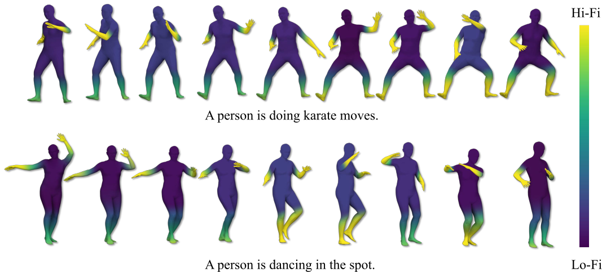
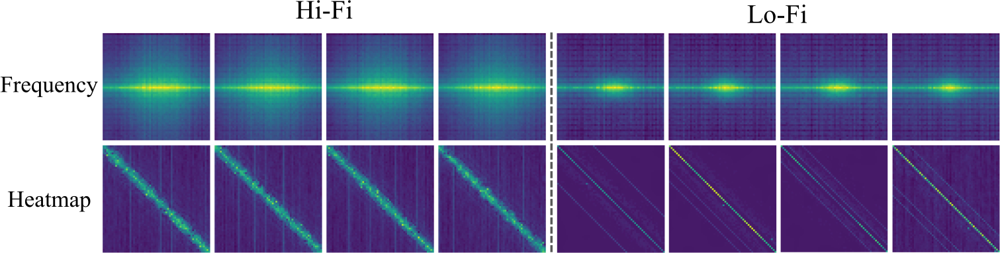
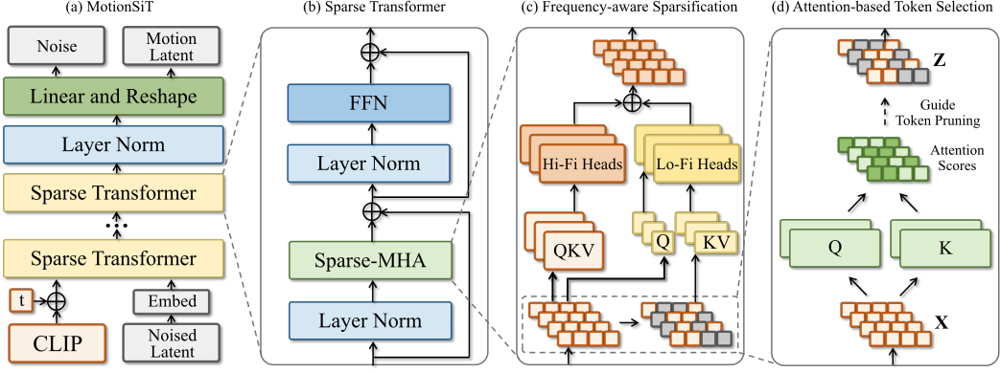
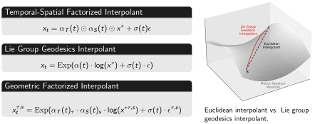
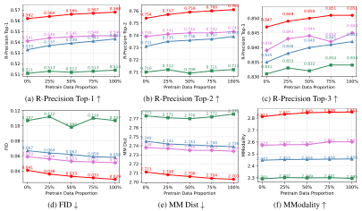

Frequency of human motion. The diagram illustrates that dynamic motions exhibit higher frequencies, while static motions correspond to lower frequencies. This observation provides key insights for the frequency-aware sparsification design of our FlashMo.

Frequency magnitude vs. attention heatmap of attention heads. The frequency magnitude is computed with the Fast Fourier Transform (FFT) and averaged over 100 latent motion features. Brighter colors indicate higher magnitudes. Pixels closer to the center represent lower frequencies. Both maps are visualized from the last layer of MotionSiT.

FlashMo architecture. FlashMo leverages frequency-aware sparsification and a MotionSiT backbone to efficiently and scalably generate motion from noised latent inputs.

To improve scalability, we design geometric factorized interpolants, which differ from the standard SiT that interpolates all dimensions jointly in Euclidean space. Instead, we apply temporal–spatial factorized interpolation with Lie group geodesics on the manifold of joint rotations. This approach enables training diffusion directly on the $so(3)$ representation, leading to more stable training and better scalability on large datasets such as MotionHub V2.

Scaling trend. The figure demonstrates the scaling trends of different denoiser designs (U-Net, DiT, SiT, and MotionSiT) with varying proportions of pretraining data. The results show that our MotionSiT exhibits superior scalability and outperforms other methods.
Efficiency comparison. The figure demonstrates that FlashMo achieves the lowest inference time, training time, model size, and FLOPs while maintaining superior performance compared to other methods.
@inproceedings{zhang2025flashmo,
title={FlashMo: Geometric Interpolants and Frequency-Aware Sparsity for Scalable Efficient Motion Generation},
author={Zhang, Zeyu and Wang, Yiran and Li, Danning and Gong, Dong and Reid, Ian and Hartley, Richard},
booktitle={The Thirty-ninth Annual Conference on Neural Information Processing Systems},
year={2025}
}